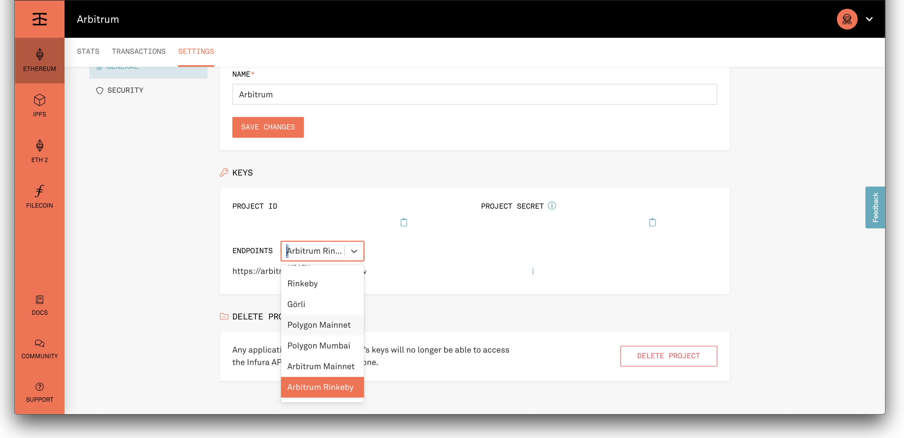

In this lesson, we're going to walkthrough setting up a development environment for the optimistic rollup protocol Arbitrum, built by Offchain Labs.
As we've discussed before, optimistic rollups offer an easier path to scaling in certain situations since they leverage much of the same toolkit as EVM development. Out of the box, Arbitrum supports Solidity as well as Truffle, Hardhat, The Graph, etc. You can see the differences between Ethereum and Arbitrum here.
Like Optimism, Arbitrum's consensus layer is a dispute-based one, called a Multi-Round Interactive Optimistic Rollup protocol. Anyone can monitor or submit disputes on the Arbitrum chain, Read more about the protocol here and how to run a validator here.
As of now, Arbitrum has limited functionality in terms of porting assets from L1 >> L2 and vice versa. See its capabilities in the tutorials listed here.
Again, we want to stress how new this technology is. You should be extremely cautious when working with it and be aware that documentation may not be up to date.
The requirements and setup for Arbitrum are very similar to the previous lesson on Optimism, except that Arbitrum's testnet is running on Rinkeby while Optimism's is on Kovan. We'll also be using our SimpleStorage.sol contract as a generic stand-in for your dapp's contract. Feel free to swap it out!
You'll also need to setup an Arbitrum project on your Infura account. You don't have to update your account, right now access is being offered at the "core" level for free up to 100,000 daily requests. You must enable the Arbitrum Rollup ADD-ON under the billing section under Manage Add-Ons in your Infura account Settings for the API requests to work properly. When setting up your project, be sure to select the "Ethereum" network. Then, under settings, select the "Arbitrum Rinkeby" testnet, as shown below:

You'll also need to have Rinkeby test-ETH for the project if you'd like to run it on a public testnet. Follow the steps on the Rinkeby testnet faucet here to get some.
Once you have Rinkeby test-ETH, you'll need to bridge it to Arbitrum testnet. Follow these steps:
https://arbitrum-rinkeby.infura.io/v3/" + infuraKeyarbitrum_testnet network in truffle-config.arbitrum.js is the mnemonic associated with your Arbitrum Rinkeby MetaMask wallet we just bridged.Let's get started! (For more detail, you can find the tutorial this lesson is based on here.)
From a new directory, unbox the Arbitrum box:
truffle unbox arbitrum
You will need at least one mnemonic to use with the network. The .dotenv npm package has been installed for you, and you will need to create a .env file for storing your mnemonic and any other needed private information.
The .env file is ignored by git in this project, to help protect your private data. In general, it is good security practice to avoid committing information about your private keys to github. The truffle-config.arbitrum.js file expects a MNEMONIC value to exist in .env for running commands on each of these networks, as well as a default MNEMONIC for the Arbitrum network we will run locally.
If you are unfamiliar with using .env for managing your mnemonics and other keys, the basic steps for doing so are below:
touch .env in the command line to create a .env file at the root of your project..env file in your preferred IDEMNEMONIC="jar deny prosper gasp flush glass core corn alarm treat leg smart"
INFURA_KEY="<Your Infura Project ID>"
RINKEBY_MNEMONIC="<Your Rinkeby Mnemonic>"
MAINNET_MNEMONIC="<Your Arbitrum Mainnet Mnemonic>"
Note: the value for the MNEMONIC above is the one you should use, as it is expected within the local arbitrum network we will run in this Truffle Box.
require('dotenv').config() and refer to the variable you need with process.env['<YOUR_VARIABLE>'].You may notice some differences in the workflow from our typical Truffle environment. For example,a new configuration file exists in this project: truffle-config.arbitrum.js. This file contains a reference to the new file location of the contracts_build_directory and contracts_directory for Arbitrum contracts and lists several networks for running the Arbitrum Layer 2 network instance.
Please note, the classic truffle-config.js configuration file is included here as well, because you will eventually want to deploy contracts to Ethereum as well. All normal truffle commands (truffle compile, truffle migrate, etc.) will use this config file and save built files to build/ethereum-contracts. You can save Solidity contracts that you wish to deploy to Ethereum in the contracts/ethereum folder.
Another difference: When you compile or migrate, the resulting json files will be at build/arbitrum-contracts/. This is to distinguish them from any Ethereum contracts you build, which will live in build/ethereum-contracts. As we have included the appropriate contracts_build_directory in each configuration file, Truffle will know which set of built files to reference.
To compile your Arbitrum contracts, run the following in your terminal:
npm run compile:arbitrum
This script lets Truffle know to use the truffle-config.arbitrum.js configuration file, which tells Truffle where to store your build artifacts. When adding new contracts to compile, you may find some discrepancies and errors, so please remember to keep an eye on differences between ethereum and Arbitrum.
Now that we've compiled the contract for Arbitrum, we can migrate it to an Arbitrum Layer 2 network. First, let's just try to our local Ganache, which will be almost similar to a normal Ethereum ganache instance:
npm run migrate:arbitrum --network=ganache
This may be a bit underwhelming! However, if we have loaded in our Infura Arbitrum Rinkeby network endpoint and have enough Arbitrum Rinkeby ETH in the wallet tied to the .env mnemonic, we can also run:
npm run migrate:arbitrum --network=arbitrum_testnet
Like standard Truffle, if you would like to migrate previously migrated contracts on the same network, you can run truffle migrate --config truffle-config.arbitrum.js --network=(arbitrum_local | arbitrum_testnet | arbitrum_mainnet) and add the --reset flag.
Following the above steps should allow you to deploy to the Optimism Layer 2 chain. This is only the first step! Once you are ready to deploy your own contracts to function on Layer 1 Ethereum using Layer 2 Arbitrum, you will need to be aware of the ways in which Layer 1 and Layer 2 interact in the Arbitrum ecosystem.
Furthermore, keep an eye out for new developments in Truffle tooling to assist with bridging L1-L2 data and execution.